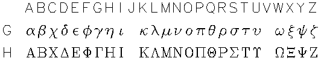
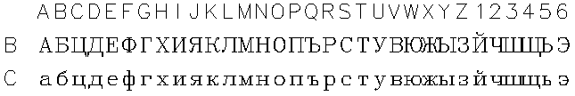
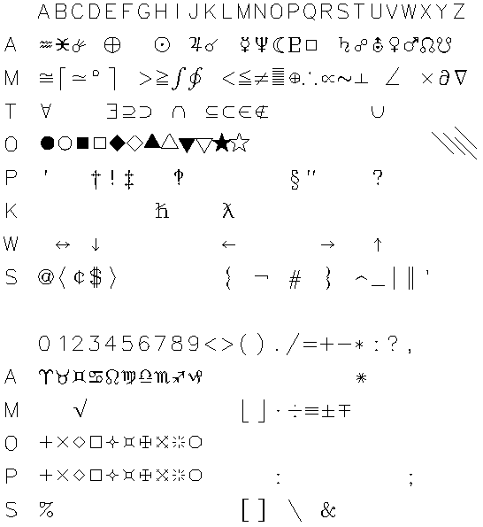
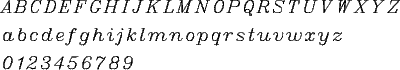
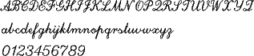
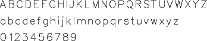
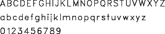
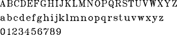
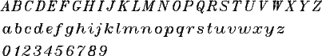
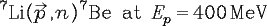

There are several fonts available in the unified graphics. They are:
EXTENDED and DUPLEX.
The EXTENDED and DUPLEX support many sets of characters. The DUPLEX set is
slow compared to the extended set, but it looks almost like printed
characters if you use a high resolution device. The alternate character
sets are determined by a character pair. The first character determines
the actual character printer, the second one determines the case.
Case Character set
blank Roman (default)
L Roman lower case
F+G Greek
B+C Cyrillic
O Plotting symbols
P Punctuation symbols
M Math symbols
T Theoretic symbols
S Typographic symbols
W Arrows
A Astronomical symbols
K Physics symbols
D Drawing symbols (underscore)
U+V Movement control
X super/subscript
Y char size control
Z position save/restore
The following are only available if you SET FONT DUPLEX:
3 bold roman
1 san-serif
2 bold san serif
I italic
4 bold italic
J script
Case character:
blank = upper case, L= Lower case
This is the normal ASCII character set. It is not necessary to use L to
shift to lowercase if your computer accepts lowercase characters.
Case character:
F = upper case, G= Lower case
A Alpha B Beta G Gamma D Delta
E Epsilon Z Zeta H Eta Q Theta
I Iota K Kappa L Lambda M Mu
N Nu X Xi O Omicron P Pi
R Rho S Sigma T Tau U Upsilon
F Phi C Chi Y Psi W Omega

Case character:
B=Upper case, C=Lower case
A Ah B Beh V Veh G Geh
D Deh E Yeh X Zheh Z Zeh
I Ee 1 Ee S Kratkoy
K Kah L El M Em N En
O Oh P Peh R Err S Ess
T Teh U Ooh F Ef H Kha
C Tseh 2 Cheh 3 Shah 4 Shchan
Q Tvyordy Znak
Y Yery 5 Myakhki Znak
6 Eh Oborotnoye
W Yoo J Yah

| Case: | D | U | V | X | Y | Z
|
| draw | move | move | super/sub | size | save pos
|
| U | underscore
|
| O (oh) | overscore
|
| 0 (zero) | | 1 space back | | enter subscript | incr half | save1
|
| 1 | | half space | half up | leave subscript | decr half | restore1
|
| 2 | | half space back | half down | enter superscript | | save2
|
| 3 | | third space | third up | leave superscript | | restore2
|
| 4 | | third space back | third down | | | save3
|
| 5 | | sixth space | sixth up | | | restore3
|
| 6 | | sixth space back | sixth down | | | save4
|
| 7 | | | | | | restore4
|

back to top

back to top

back to top

back to top

back to top

back to top

back to top
TITLE "273Li(0p11R2,n)273Be at E0p1 = 400 MeV"
CASE "X X ZIZVAV I X X IXIX "

back to top